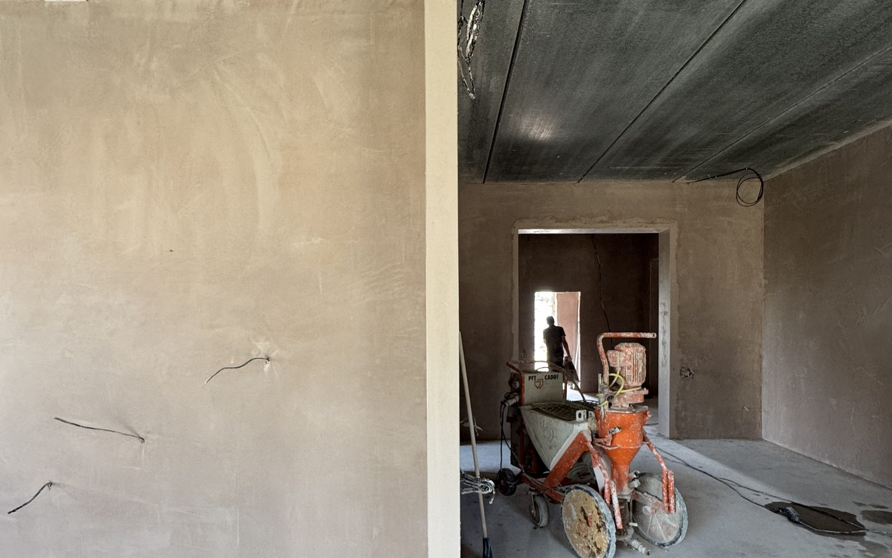
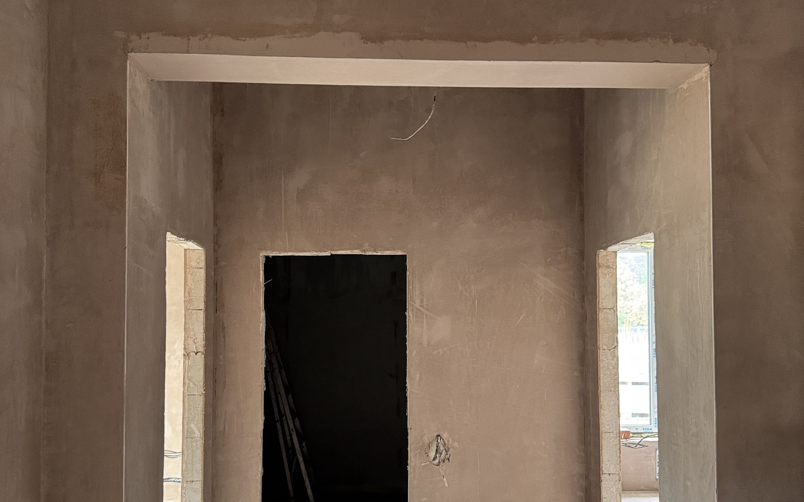

Гипсовая
480 ₽
за м², от
- Комнаты, коридоры, спальни
- Под обои — без шпаклёвки
- Сохнет 5–7 дней
Ровная плоскость под обои, плитку и последующую шпаклёвку: 80–120 м² за смену вместо 15–20 вручную. Цена от 480 ₽/м² фиксируется в договоре после замера и дальше не растёт.


Станция сама подаёт воду, замешивает раствор и выдаёт его на стену под давлением. Смесь одинаковая по всему объёму — не «как замешали в этот раз». Отсюда скорость, меньше трещин и ровнее плоскость.
| Параметр | Механизированная | Ручная |
|---|---|---|
| Выработка за смену | 80–120 м² | 15–20 м² |
| Однородность раствора | Задаётся станцией | Зависит от замеса |
| Стыки и захватки | Стена идёт за один проход | Швы между захватками |
| Расход смеси | Ниже на 10–15 % | Выше |
| Поверхность под обои | Плотные обои — без шпаклёвки | Шпаклёвка почти всегда |
| Срок для квартиры 100 м² | 2–3 дня | от 2 недель |
Посчитаем вашу площадь и назовём срок выхода на объект. Замер бесплатный.
Позвонить Калькулятор ценыЭто ставки за работу: грунтовка, маяки, нанесение, подрезка и заглаживание. Смесь считается отдельно по фактическому расходу.
Каждый этап заканчивается понятным результатом, а не «мы работаем». Вы всегда знаете, на каком шаге объект.
Проверяем геометрию стен и перепады, считаем реальную толщину слоя — от неё зависит расход смеси и цена.
Фиксируем объём, цену за м² и срок. После подписания цена не меняется, если не меняется объём работ.
Грунтуем основание, ставим маяки и защитные уголки, укрываем окна, радиаторы и полы.
Станция подаёт раствор, бригада вытягивает правилом по маякам, подрезает и заглаживает поверхность.
Проверяем плоскость двухметровым правилом и уровнем при вас, показываем результат, подписываем акт.
Говорим, сколько ждать до шпаклёвки и покраски. Поспешите с отделкой — пойдут пятна, это не гарантийный случай.
Гарантия прописана в договоре, а не обещана на словах. Если в течение срока появится дефект из списка ниже — приезжаем и переделываем за свой счёт.
Три вопроса, которые нам задают почти на каждом объекте. Отвечаем честно, до начала работ.
Цена за м² и объём фиксируются в договоре после замера. Она меняется, только если вы сами добавляете работы — например, решили штукатурить ещё и потолки. Мы не «находим» дополнительные работы посреди объекта.
Срок считается от площади: станция даёт 80–120 м² за смену, и это проверяемая цифра. На замере вы получаете конкретную дату окончания, а не «недели через две-три».
Трещины дают нарушенная технология и спешка с финишем. Мы грунтуем основание, выдерживаем толщину слоя и называем точный срок сушки. Если дефект всё же наш — переделываем по гарантии за свой счёт.
Базируемся в Челябинске, оборудование возим по области. Дальше 30 км от города к смете добавляется доставка станции — сумму называем на замере, «сюрпризов» в конце не бывает.
Гипсовая — от 480 ₽/м², цементно-песчаная — от 590 ₽/м². Итог зависит от толщины слоя, площади и удалённости объекта. Точную цену называем после замера и фиксируем в договоре.
Гипсовая слоем 10–15 мм — 5–7 дней, цементная — от 14 до 28 дней. Сроки зависят от температуры и проветривания. Шпаклевать, клеить обои и красить можно только после полного высыхания, иначе отделка пойдёт пятнами.
3 года по договору. Гарантия покрывает отслоение штукатурки, трещины и отклонения плоскости сверх нормативного допуска.
По всей Челябинской области. Для объектов дальше 30 км от Челябинска в смету добавляется доставка оборудования — сумму озвучиваем на замере.
Электричество (380 В или 220 В под соответствующую станцию), воду, свободный доступ к стенам и вынесенную мебель. Окна, радиаторы и полы укрываем сами.
Да, работаем с подрядчиками и застройщиками на объёмах от 300 м². Условия и график обсуждаем отдельно — позвоните или напишите в WhatsApp, контакты на странице контактов.
Позвоните или напишите в WhatsApp — уточним объём и назовём диапазон цены в тот же день. Замер по Челябинску бесплатный.
Позвоните или напишите в WhatsApp — ответим в течение рабочего дня. Назовите площадь и город, и мы сразу скажем диапазон цены и когда сможем выйти на объект.
Позвоните или напишите в WhatsApp: назовите площадь и город — посчитаем стоимость и скажем, когда сможем выйти на объект.
Смотреть контакты